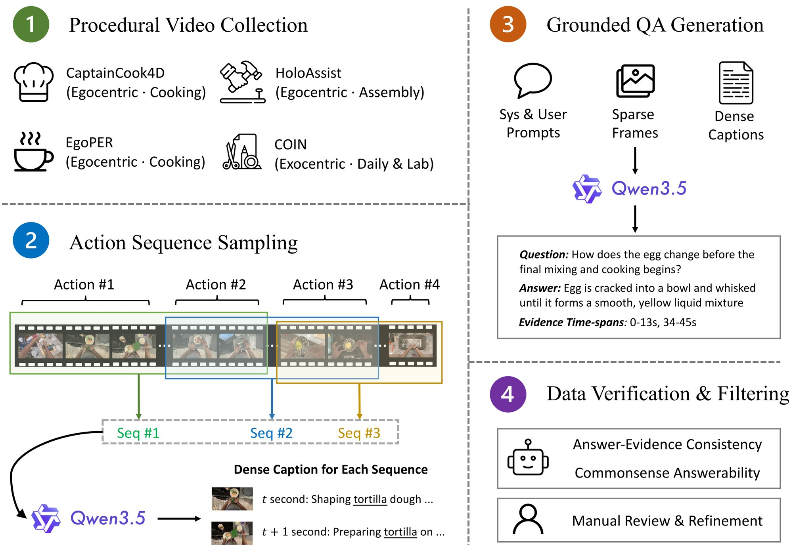
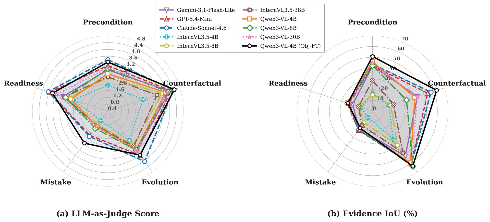

Procedural activities are fundamentally driven by object state transitions, yet existing instructional video benchmarks remain action-centric and cannot evaluate whether models reason about how objects evolve toward task completion. In this work, we introduce ProcObject-10K, the first benchmark that jointly evaluates object-centric reasoning and temporal evidence grounding in instructional videos, across both egocentric and exocentric views. It comprises 10,522 open-ended VideoQA pairs grounded in 1,799 video clips, spanning 137 tasks across 9 domains and five reasoning types covering preconditions, state evolution, counterfactuals, mistakes, and readiness. Benchmarking 13 leading MLLMs reveals a substantial answering-grounding gap: models produce plausible answers while failing to localize the supporting evidence (mIoU < 45%), exposing their reliance on linguistic priors rather than fine-grained object dynamics.
As a step toward closing this gap, we further provide an object-centric supervised fine-tuning baseline with pseudo object-level supervision and spatial-temporal constraints. Models fine-tuned on ProcObject-10K not only improve on the benchmark itself, but also transfer effectively to other grounded VideoQA and embodied planning tasks. The dataset, annotations, and evaluation toolkit are publicly released to support future research on object-centric procedural understanding.
A grounded VideoQA task: the model watches a procedural clip, answers an open-ended question about an object, and outputs the time spans that support its answer.
{"answer": "…", "evidence": [[t0, t1], …]}

Multi-hop Reasoning: evidence spread over several separate spans. Needle-in-a-Haystack: one short, critical moment inside a long clip. Charts are computed from the released annotations.
| Dataset | View | Object-centric | QA type | Evidence | Mistakes | Video domain |
|---|---|---|---|---|---|---|
| COIN | Exo | ✗ | – | ✗ | ✗ | Instructional |
| ChangeIt | Exo | ✓ | – | ✗ | ✗ | Instructional |
| EgoSchema | Ego | ✗ | Multi-choice | ✗ | ✗ | Human activity |
| EgoPER | Ego | ✗ | – | ✗ | ✓ | Instructional |
| CaptainCook4D | Ego | ✗ | – | ✗ | ✓ | Instructional |
| ProMQA | Exo | ✗ | Open-ended | ✗ | ✓ | Instructional |
| REXTIME | Exo | ✗ | Multi-choice | ✓ | ✗ | Generic |
| VideoInfer | Exo | ✓ | Open-ended | ✓ | ✓ | Human activity |
| MultiHop-EgoQA | Ego | ✗ | Open-ended | ✓ | ✗ | Human activity |
| TrackVerse | Exo | ✓ | – | ✗ | ✗ | Generic |
| EPIC-KITCHENS-100-MQA | Ego | ✗ | Open-ended | ✓ | ✓ | Instructional |
| ProcObject-10K | Ego + Exo | ✓ | Open-ended | ✓ | ✓ | Instructional |
Ten test questions, two per type, with the ground-truth evidence and the saved benchmark predictions of four models. Play the clip and watch the playhead pass through each model's predicted spans; IoU is computed against the ground truth, exactly as in the benchmark.
Shaded band = ground-truth evidence. Click or drag on the timeline to seek.
13 models on the 1,050-question test split (4 blind LLMs that see only the question, 3 closed-source and 6 open-source MLLMs), plus Qwen3-VL-4B with our object-centric fine-tuning.
| Answering | Grounding (%) | |||||
|---|---|---|---|---|---|---|
| Model | S.↑ | B.↑ | J.↑ | mIoU↑ | mIoP↑ | mIoG↑ |
Metrics. S. = sentence similarity, B. = BERTScore F1, J. = LLM-as-judge score (0–5, the mean of GPT-5-mini, Qwen3 and Llama-3.2 judges over four dimensions: contextual integration, detail orientation, contextual understanding and temporal understanding). Grounding uses set-level, interval-merged IoU between predicted and ground-truth spans; mIoP and mIoG divide by the predicted and the ground-truth length instead. Bold / underline = best / second best, as in the paper (Table 2).

Standard SFT supervises only the text of the answer, never which objects, or which moments, the answer rests on. We add that supervision cheaply: pseudo object labels from a VLM and an open-vocabulary detector, and two light auxiliary heads that predict where and when the question's objects appear.
The answer-generation loss stays the main signal. The auxiliary weights are small and warmed up during training, so the constraints shape the visual representation without overwhelming answer generation.
Fine-tuned only on ProcObject-10K, the model is applied zero-shot to another grounded VideoQA benchmark and to embodied planning. ‡ = fine-tuned with the generative loss only, without the spatial and temporal constraints.
General procedural questions over long egocentric videos, scored with that benchmark's own protocol (LLM score from 0 to 10). Fine-tuning on ProcObject-10K beats GeLM-7B, a model trained on MultiHop-EgoQA itself, on mIoU.
| Method | Input | mIoP | mIoG | IoU@0.3 | mIoU | Sent. Sim. | LLM Score |
|---|
The fine-tuned model replaces the language planner inside FLARE, a framework designed for ALFRED's long-horizon household tasks. As a zero-shot planner it slightly exceeds FLARE with GPT-4 on success rate (41.33 vs 40.88 on unseen scenes).
| Test seen | Test unseen | |||
|---|---|---|---|---|
| Method | SR | GC | SR | GC |
If you find ProcObject-10K useful, please cite:
@inproceedings{guo2026procobject,
title = {{ProcObject-10K}: Benchmarking Object-Centric Procedural Understanding in Instructional Videos},
author = {Guo, Wenliang and Kong, Yu},
booktitle = {Advances in Neural Information Processing Systems (NeurIPS), Evaluations and Datasets Track},
year = {2026},
url = {https://arxiv.org/abs/2512.03479}
}Please also cite the source datasets: CaptainCook4D, EgoPER, HoloAssist and COIN.